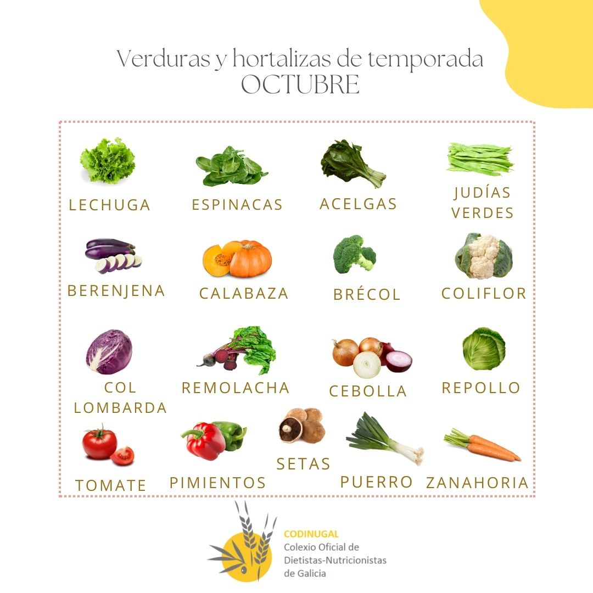

Calendario de verduras de temporada
Una referencia por meses para elegir verduras y preparar el menú semanal.
Fuente: Codinugal · Colegio Oficial de Dietistas-Nutricionistas de Galicia.
Este mes…

| Mis verduras favoritas | |
|---|---|
| Ajo | diciembre–julio |
| Berenjena | junio–diciembre |
| Calabacín | enero y junio–septiembre |
| Calabaza | junio–noviembre |
| Canónigos | marzo–abril |
| Cebolla | todo el año |
| Endivia | abril y agosto |
| Espárragos trigueros | marzo–junio |
| Espinacas | septiembre–julio |
| Lechuga | todo el año |
| Pepino | junio–septiembre |
| Pimientos | mayo–enero |
| Puerro | enero–junio y septiembre–noviembre |
| Tomate | mayo–diciembre |
| Zanahoria | todo el año |
Enero
Este mes- Hojas
- Grelos, nabizas, espinacas, acelgas, lechuga, escarola.
- Coles
- Lombarda, brécol, coliflor, repollo.
- Otras verduras
- Alcachofa, judías verdes, calabacín, apio, pimiento rojo.
- Raíces y bulbos
- Zanahoria, ajo, cebolla, puerro.
Febrero
Este mes- Hojas
- Grelos, nabizas, espinacas, acelgas, escarola, lechuga.
- Coles
- Col rizada, brécol, coliflor, lombarda, coles de Bruselas, repollo, asa de cántaro.
- Otras verduras
- Alcachofa, apio.
- Raíces y bulbos
- Zanahoria, cebolla, ajo, puerro.
Marzo
Este mes- Hojas
- Grelos, nabizas, acelgas, espinacas, lechuga, canónigos.
- Coles
- Repollo, col rizada, brécol, romanesco, coliflor, lombarda.
- Otras verduras
- Alcachofa, apio, espárragos trigueros.
- Raíces y bulbos
- Zanahoria, puerro, ajo, cebolla, cebolleta.
Abril
Este mes- Hojas
- Acelgas, espinacas, endivias, lechuga, canónigos, escarola.
- Coles
- Repollo, col rizada, brécol, coliflor, lombarda.
- Otras verduras
- Alcachofa, espárragos trigueros, apio.
- Raíces y bulbos
- Cebolla, cebolleta, zanahoria, puerro, ajo.
Mayo
Este mes- Hojas
- Lechuga, acelgas, espinacas.
- Coles
- Repollo, lombarda, col rizada, brécol, coliflor.
- Otras verduras
- Judías verdes, alcachofa, espárragos trigueros, tomate, pimientos, apio.
- Raíces y bulbos
- Ajo, puerro, cebolla, cebolleta, rábano, zanahoria.
Junio
Este mes- Hojas
- Lechuga, espinacas, acelgas.
- Coles
- Brécol, coliflor.
- Otras verduras
- Judías verdes, calabaza, calabacín, berenjena, pepino, tomate, pimiento, espárragos trigueros.
- Raíces y bulbos
- Zanahoria, remolacha, cebolla, cebolleta, puerro, ajo, rábano.
Julio
Este mes- Hojas
- Lechuga, espinacas.
- Otras verduras
- Berenjena, judías verdes, calabaza, pepino, calabacín, tomate, pimientos.
- Raíces y bulbos
- Rábano, remolacha, zanahoria, ajo, cebolla, cebolleta.
Agosto
Este mes- Hojas
- Lechuga, endivia.
- Otras verduras
- Judías verdes, calabaza, berenjena, calabacín, pepino, pimientos, pimientos de Padrón y de Herbón, tomate.
- Raíces y bulbos
- Remolacha, cebolla, rábanos, zanahoria.
Septiembre
Este mes- Hojas
- Lechuga, espinacas.
- Coles
- Brécol, coliflor.
- Otras verduras
- Judías verdes, berenjena, calabaza, calabacín, pepino, tomate, pimientos, pimientos de Padrón y de Herbón.
- Raíces y bulbos
- Remolacha, puerro, cebolla, rábanos, zanahoria.
Octubre
Este mes- Hojas
- Lechuga, espinacas, acelgas.
- Coles
- Brécol, coliflor, lombarda, repollo.
- Otras verduras
- Judías verdes, berenjena, calabaza, tomate, pimientos.
- Raíces y bulbos
- Remolacha, cebolla, puerro, zanahoria.
- Hongos
- Setas.
Noviembre
Este mes- Hojas
- Grelos, nabizas, espinacas, acelgas, lechuga.
- Coles
- Brécol, coliflor, lombarda, repollo, coles de Bruselas.
- Otras verduras
- Berenjena, alcachofa, pimientos, calabaza, tomate.
- Raíces y bulbos
- Cebolla, zanahorias, puerro.
- Hongos
- Setas.
Diciembre
Este mes- Hojas
- Grelos, nabizas, espinacas, acelgas, lechuga.
- Coles
- Lombarda, brécol, coliflor, repollo.
- Otras verduras
- Berenjena, apio, alcachofa, pimientos, tomate.
- Raíces y bulbos
- Ajo, cebolla, zanahorias, rábano.
Cómo usar este calendario
Calendario orientativo basado en las láminas de Codinugal. Aunque la fuente es el Colegio Oficial de Dietistas-Nutricionistas de Galicia, el material no especifica que todos los productos correspondan a cosecha local gallega al aire libre. No garantiza procedencia ni disponibilidad en tu zona.
- Los productos y sus meses se transcriben de las láminas; los grupos son una organización propia para facilitar la consulta.
- No se añaden productos ausentes de la fuente: patata y boniato no aparecen.
- No se distingue entre plena temporada e inicio o final: la fuente no ofrece esa clasificación.